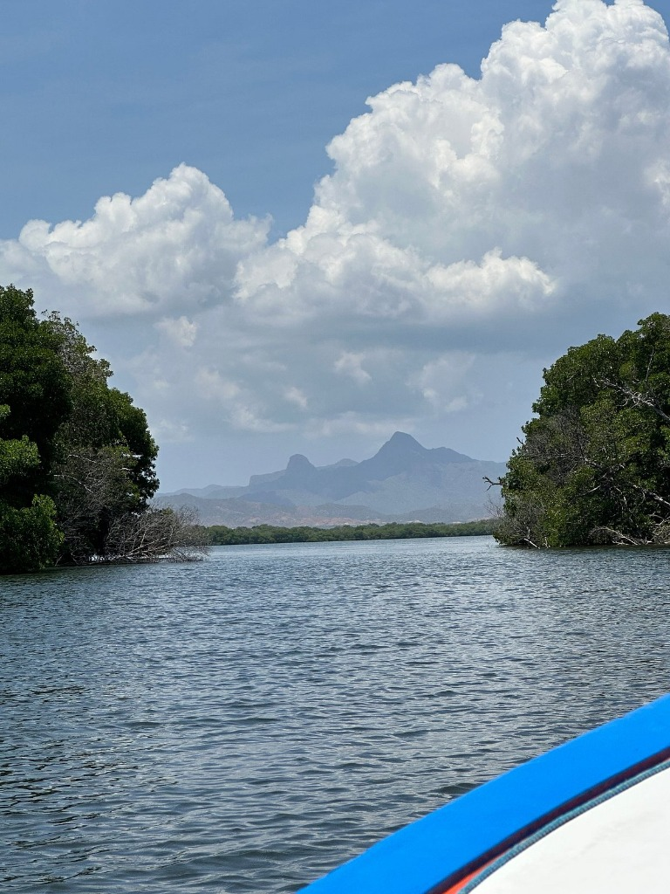
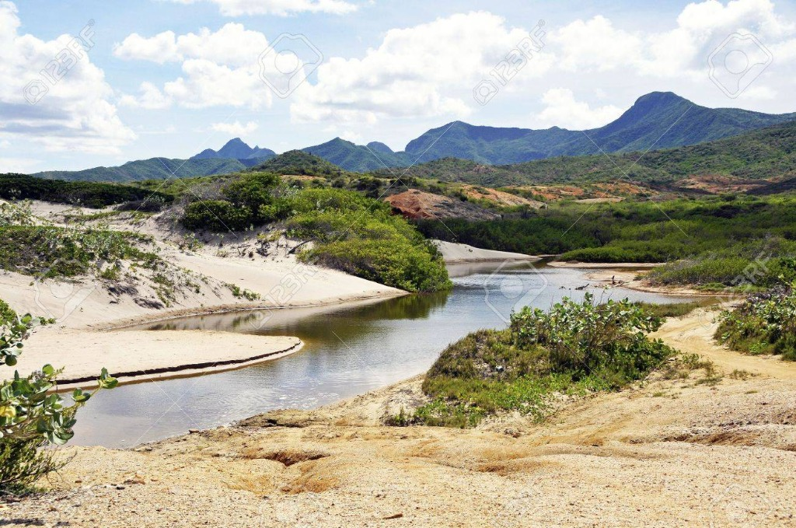

Descubre y Protege las
Aves de Nueva Esparta
Únete a la comunidad de observadores de aves. Registra tus avistamientos, explora el mapa interactivo y contribuye a la conservación de la biodiversidad en Nueva Esparta.
Santuarios Naturales de la Isla
Explora los ecosistemas clave donde nuestro sistema registra la mayor actividad ecológica y avistamiento de aves migratorias.

Laguna de La Restinga
Un laberinto de manglares vital para flamencos, garzas y espectaculares aves de paso migratorio.
Cerro El Copey
Santuario de selva nublada en el centro de la isla. Punto preferido para registrar especies endémicas y rapaces.

Península de Macanao
Ecosistema xerófilo árido único donde habita y se recupera la amenazada Cotorra Margariteña.
Aves de Margarita
Conoce algunas de las especies emblemáticas de nuestra región.
¿Conoces las Aves de Margarita?
Participa en nuestro minijuego educativo de conservación para desbloquear medallas virtuales dentro de la comunidad de Avistar NE.